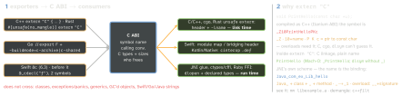

cs · folio
In one line: Languages call each other through the C ABI: an unmangled symbol, the
platform’s C calling convention, C types (scalars, pointers, plain structs). One side
exports C-looking functions (extern "C", Go //export, Swift
@c); the other links them (-l, cgo, module map) or
dlopens them and declares the types (ctypes, Ruby FFI). Every allocation
keeps one owner.
Download PDF Print view LaTeX source


Pick a strategy
| host · library | strategy (e.g.) |
|---|---|
| compiled · compiled | link a library via the C ABI (Go → C++, Rust ↔ C) |
| compiled · interpreted | embed the interpreter, run scripts (CPython C API, Lua) |
| VM · compiled | FFI or a native extension (ctypes, cffi, JNI) |
| interpreted · interpreted | 2 processes + IPC (pipes, sockets, gRPC) or one C lib |
| any → Wasm | only i32 i64 f32 f64 cross; a string = ptr + len |
Libraries and the linker
- Static
.a= archive of.o(ar rcs); the linker copies in only members that resolve an undefined symbol. GNU ld searches each archive once, where it stands (-lfooafter its users); LLD remembers archives, so order does not bite there. - Dynamic
.so/.dylib/.dll(cc -shared -fPIC; macOS-dynamiclib): the loader maps + binds it at launch;dlopen+dlsymat run time = what ctypes/FFI do. - Both in one dir,
-lexampletakes the.so/.dylib(GNU ld, ld64): “static” links, then fails to launch elsewhere — use-Bstaticor the.apath. Module maplink "example"=-lexample.
Example — one header for C, C++ and cgo
#ifdef __cplusplus
extern "C" { // C++ sees C linkage; C never sees this
#endif
void PrintHello(const char *u); // C types only
char *MakeGreeting(const char *name); // malloc'd ...
void FreeGreeting(char *p); // ... freed HERE
#ifdef __cplusplus
}
#endif// #cgo LDFLAGS: -L${SRCDIR} -lexample
// #include <stdlib.h>
// #include "example.h"
import "C" // the comment right above is the preamble
import "unsafe"
func main() {
s := C.CString("Hi") // malloc'd C copy
defer C.free(unsafe.Pointer(s)) // Go frees it
C.PrintHello(s) }Go as the library
//export SayHello
func SayHello(s *C.char) { fmt.Println(C.GoString(s)) }
func main() {} // package main required; never called
// go build -buildmode=c-shared -o libhello.so (c-archive: .a)Only //exported functions are callable; the Go runtime ships inside and starts as a global constructor (c-archive) or when the .so loads; libhello.h is written beside it. With //export the preamble may only declare (it is copied into two C files).
Python and Ruby — load at run time
lib = CDLL("./libexample.so") # dlopen
lib.PrintHello.argtypes = [c_char_p] # now type-checked
lib.PrintHello(b"Hi") # bytes -> char*
lib.MakeGreeting.restype = c_void_p # default int truncates
p = lib.MakeGreeting(b"Ann"); print(c_char_p(p).value) # copy
lib.FreeGreeting(c_void_p(p)) # a bare int goes as C intRuby FFI: attach_function :PrintHello, [:string], :void — return type required. CDLL releases the GIL (PyDLL keeps it). cffi cdef() takes declarations (no #include); ABI mode dlopens, API mode compiles an extension (faster).
JVM — JNI
- Kotlin
external fun hello(s: String)incom.ex.Lib+System.loadLibrary("example")(→libexample.so) bind C glue written againstjni.h, named as in 2, args(JNIEnv*, jobject, jstring)— orRegisterNativesinJNI_OnLoad. JNIEnv*is per thread (a thread C started:AttachCurrentThread); ajobjectis a local ref, dead after the call (NewGlobalRef); strings come as modified UTF-8. No glue: FFM API (JDK 22) +jextract.
Memory ownership and errors
- Whoever allocates, frees —
FreeGreeting, GoC.free, RustCString::from_raw(never Cfree()). - C keeps no Go pointer past the call unless pinned (
runtime.Pinner); a ctypesCFUNCTYPEmust stay referenced while C may call it. - Errors: catch in the wrapper, return a code — a Rust panic out of
extern "C"aborts (1.81+), a C++ exception reaching Swift terminates.
Traps
- No
extern "C"→ undefined reference toPrintHello; an unguardedextern "C"in a header breaks C/cgo. - ctypes: no
restypetruncates a 64-bit pointer toint; noargtypes: astrgoes aswchar_t*(C prints “H”);restype = c_char_preturns a bytes copy — no pointer left to free. - C types differ:
long4 B on Windows x64, 8 B on Linux/macOS; plaincharunsigned on Linux/Android arm64; Apple arm64 puts variadic args on the stack (ctypes: setargtypes).